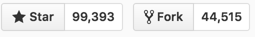

Intro to Bootstrap
https://jtcoders.gitub.io/bootstrap
Frameworks
What is a front-end framework?
A collection of production-ready HTML, CSS, JavaScript components that we can use in our designs.
CSS Frameworks - Usually include a reset, a grid system, styles for typography and forms. Some include support for mobile/print.
Javascript Frameworks - Gives structure to your JavaScript code and keeps it organized.
What is a front-end framework?
Responsiveness and cross-browser consistency for free.
Modular and reusable components.
What is Bootstrap?
Twitter's Bootstrap is a front-end UI (user interface) framework
Speeds up the development of new websites and web applications.

#1 Project on github with 95,000+ stars and over 42,000 forks
Bootstrap is an open source project on GitHub, meaning anyone can contribute to its progress.
What Comes with Bootstrap?
You can download all the necessary Bootstrap files from getbootstrap.com or from the Bootstrap repo on GitHub.
Note: We are using Bootstrap 4. Version 3 is still very popular as well.The File Structure

Layout:
Options for structuring your pages with Bootstrap, including global styles, required scaffolding, grid system, and more.
Content:
Styles for displaying content with some of the most commonly used HTML elements, including normalization, typography, images, tables, and more.
Components:
Over a dozen reusable components built to provide buttons, dropdowns, input groups, navigation, alerts, and much more.
See it in action!
Check out some of the components by opening the example.html file in your browser window.
Bootstrap Grid System
Bootstrap is based on a 12-column grid, and uses CSS classes to decide the width of each element.

Each element can take up between 1-12 columns worth of space...

Some Rules:
- Rows must be placed within a
.container(fixed-width) or.container-fluid(full-width) for proper alignment and padding. - Use rows (
.row) to create horizontal groups of columns. - Content should be placed within columns, and only columns may be immediate children of rows.
Code Example
[CONTENT FOR ROW]
See it in action!
Open up columns.html in your browser window.
Resize your browser to see where the columns break to fit 100% of the width.
See it in action!
Open up columns-fluid.html in your browser window.
Resize your browser to see where the columns break to fit 100% of the width.
Column Classes

In other words...
If you want to have two 50% columns on a mobile phone, you would use .col-xs-6 nested in a .row, and the rows would be consistent on every device...

Two 50% width columns
[COLUMN 1 CONTENT]
[COLUMN 2 CONTENT]
Two 50% columns on a mobile phone
If you want to have four 25% columns on a desktop, and would like them to break to 100% on a tablet, you would use .col-md-3 nested in a .row.

Four 25% width columns
[COLUMN 1 CONTENT]
[COLUMN 2 CONTENT]
[COLUMN 3 CONTENT]
[COLUMN 4 CONTENT]
Four 25% columns on desktop that break to 100% width on a tablet.
Multiple Grid Classes
[COLUMN 1 CONTENT]
[COLUMN 2 CONTENT]

Exercise: Grid
InstructionsContent
Typography
Bootstrap's base typography classes normalize headings, paragraph fonts, list styles and more.
Textual utility classes are also included for layout
Responsive Images
Images in Bootstrap 4 can be made responsive by adding the .img-fluid class.
Applies max-width: 100%; and height: auto; so it scales to fit the parent element.
Other Image Styles
.img-roundedapplies rounded edges.img-circletakes a square image and applies the styleborder-radius: 50%;.img-thumbnailapplies a border with rounded edges to the image
Components
- navigation
- jumbotron
- forms, modals, & alerts
- cards
Navigation
Navbar
A simple wrapper for positioning branding, navigation, and other elements into a concise header.
Require a wrapping .navbar and a color scheme.
Navbars and their contents are fluid by default.
Navbar Example
Navbar Color Scheme
Position - Full Width
Position - Fix To Top
Position - Fix To Bottom
Jumbotron
Jumbotron
A lightweight, flexible component that can optionally extend the entire viewport to showcase key content on your site.

Jumbotron Example
Exercise: Hero Image Homepage
InstructionsForms, Modals, & Alerts
Forms
Bootstrap makes styling forms easy and fast.
.form-group
Use .form-group to organize sections of your forms
Can be used on block elements like fieldset or div
.form-control
Use to style...
- Textual inputs (e.g. text, number, email)
- Select menus
- Textareas
.radio and .checkbox
Use to style radios and checkboxes, of course.
Buttons
Add a .btn class along with a style class to your button.
Bootstrap has six styles and variations.
Button tweaks
Use .btn-lg or .btn-sm for larger or smaller buttons, respectively.
Use .btn-block for block-level buttons.
Use disabled attribute to disable your buttons.
Modals
Prettier versions of dialog prompts!
Triggers sans JS: Set data-target to the modal's ID.
Consists of header, body, and footer.
Alerts
User .alert to provide contextual feedback messages for user actions.
Bootstrap has four styles: alert-*.
Exercise: Contact Me form
InstructionsCards
Cards
Flexible, extensible content container
Replaced Bootstrap 3's old panels and thumbnails

Cards Content Types
A variety is supported! Mix and match.
.card-img-*, .card-title, .card-text,
.card-list*, .card-link.
Cards Organization
Use .card-group, .card-deck, or .card-column
.card-column creates a Pinterest-board affect.
Exercise: Gallery
InstructionsFont Awesome
An icon font and CSS toolkit originally designed for Bootstrap.
Just add one line in your head to start using it.
Add html code to your html to insert icons automatically.
Customize Bootstrap
Want to customize your Bootstrap page even more?
Just create your own CSS file and include it in the head, below the Bootstrap CSS to add and override styles!
Other Tips
Before you start creating custom CSS for your design, check the Bootstrap documentation to see if they've already created a class that does what you want.
You can also check if other developers have created a Bootstrap plugin you can leverage.
Bootstrap in the Wild: Professional Examples
Bootstrap Resources
Get Bootstrap: All documentation and download files for Bootstrap
Bootstrap Expo: Check out all the rad site designs that use Bootstrap
Bootstrap on GitHub: Check out the Bootstrap repo. Maybe even contribute to the project!